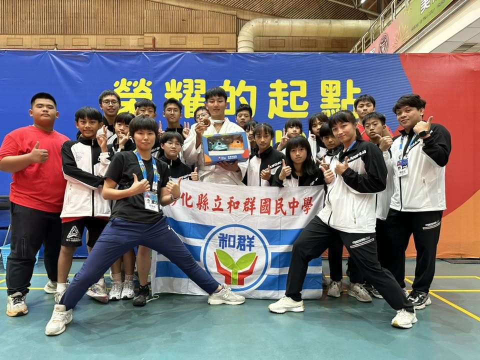
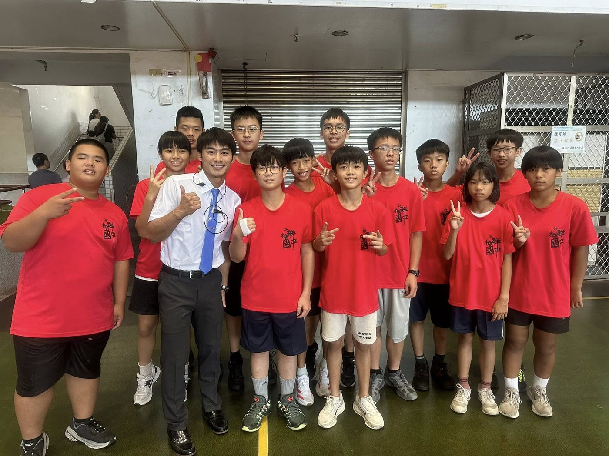

01我的故事
和群國中柔道隊
95學年度，和群國中正式成立體育班，柔道隊也在那一年誕生。從一開始的簡陋場地，到如今逐步建立起完整的訓練體系，靠的不只是環境，而是學生們一天天的汗水與堅持。
這裡的學生，許多來自清寒或弱勢家庭，經濟上的壓力往往成為最大的阻力。但他們從不喊苦，反而因為環境艱困，更懂得珍惜每一次訓練、每一次比賽的機會。對他們來說，柔道不只是運動，而是一條通往未來的道路。
由於縣府、學校資源有限，和群國中柔道隊在經費、器材與訓練環境上，經常面臨挑戰與不足。但即便在資源匱乏的條件下，選手們仍靠著教練的專業指導與自我努力，在各級比賽中屢創佳績。近年來更於全國中等學校運動會、中正盃、全國賽及縣市盃賽中多次奪牌，證明了他們的實力與堅持。

